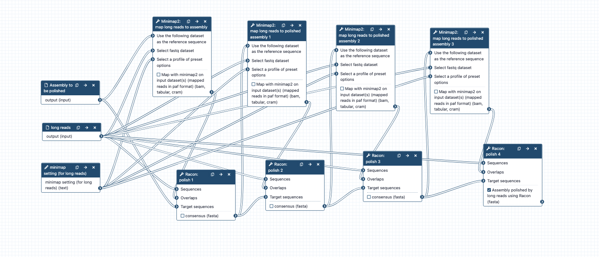

Assembly polishing subworkflow: Racon polishing with long reads Inputs: long reads and assembly contigs Workflow steps: * minimap2 : long reads are mapped to assembly => overlaps.paf. * overaps, long reads, assembly => Racon => polished assembly 1 * using polished assembly 1 as input; repeat minimap2 + racon => polished assembly 2 * using polished assembly 2 as input, repeat minimap2 + racon => polished assembly 3 * using polished assembly 3 as input, repeat minimap2 + racon => polished assembly 4 * Racon long-read polished assembly => Fasta statistics * Note: The Racon tool panel can be a bit confusing and is under review for improvement. Presently it requires sequences (= long reads), overlaps (= the paf file created by minimap2), and target sequences (= the contigs to be polished) as per "usage" described here https://github.com/isovic/racon/blob/master/README.md * Note: Racon: the default setting for "output unpolished target sequences?" is No. This has been changed to Yes for all Racon steps in these polishing workflows. This means that even if no polishes are made in some contigs, they will be part of the output fasta file. * Note: the contigs output by Racon have new tags in their headers. For more on this see https://github.com/isovic/racon/issues/85. Infrastructure_deployment_metadata: Galaxy Australia (Galaxy)
{kind=link}